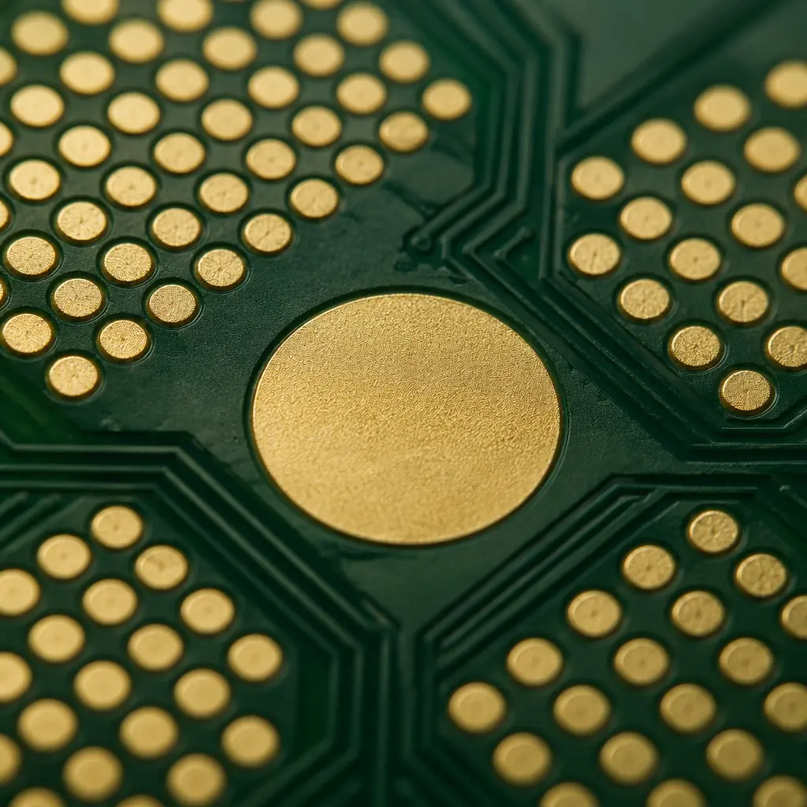
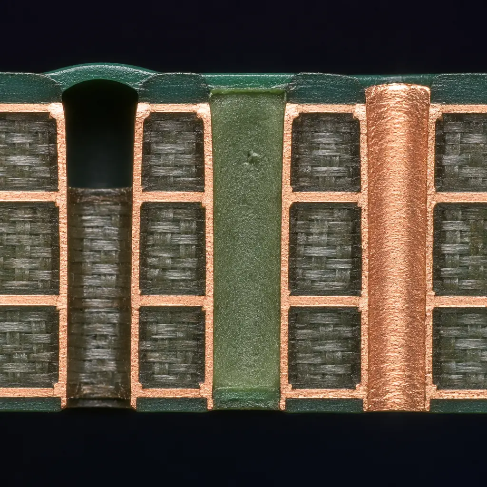
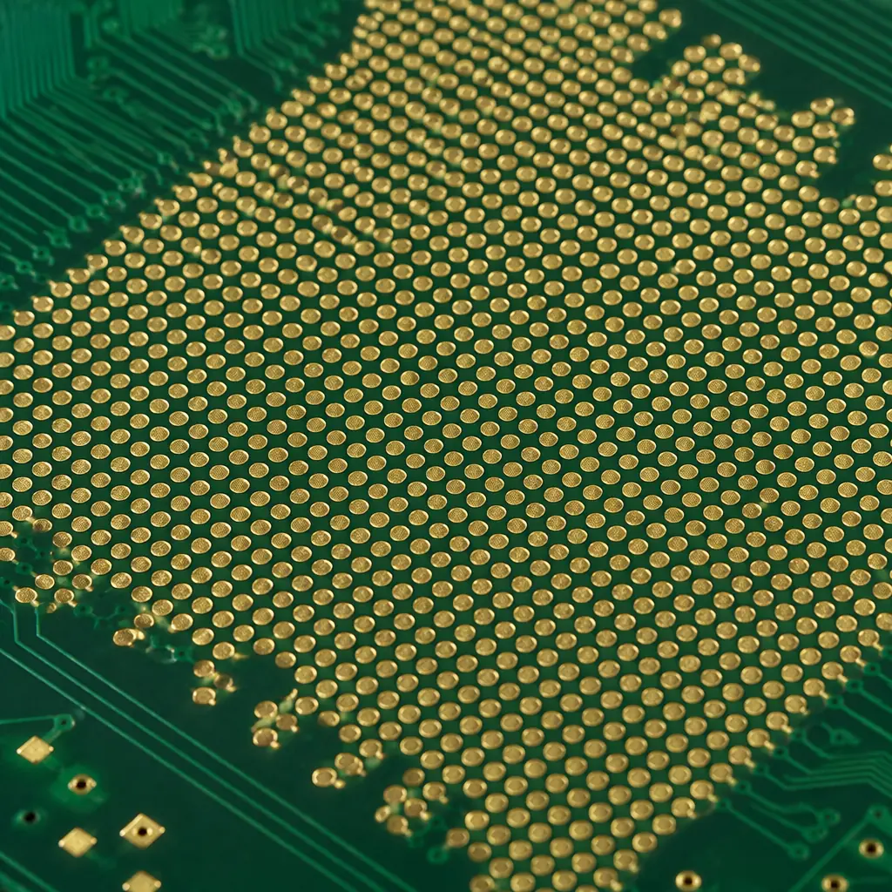

A drilled and plated via is a hollow tube — and that hollowness creates problems. During reflow soldering, molten solder can wick down an open via barrel, starving the component-side solder joint. During conformal coating, liquid coating material can flow through the via and contaminate the opposite side. And under a BGA ball, an unfilled via-in-pad traps air and flux that expand during reflow, creating voids that compromise joint reliability. Via fill is the solution to all three problems — but the right fill type depends entirely on what you need the via to do after it is filled.
This guide covers every commercially relevant via fill technology: non-conductive epoxy for general-purpose plugging, conductive epoxy for thermal management, copper-filled vias for the highest electrical and thermal performance, and the distinction between plugged and tented vias that causes more confusion than any other topic in PCB via design. With 1.2 million filled vias processed per day across our production lines, the data in this guide comes from the manufacturing floor — not a datasheet summary.

IPC-4761: The Standard That Defines Via Protection
Before discussing materials, you need to understand how the industry classifies via protection. IPC-4761 — "Design Guide for Protection of Printed Board Via Structures" — defines seven distinct protection types (Type I through Type VII). Designers and procurement teams who reference the IPC-4761 type directly eliminate ambiguity — there is no confusion between "tented" and "plugged" when the standard specifies exactly what each term means.
Type I — Tented Via (One Side)
The via is covered by solder mask on one side only. The solder mask film stretches across the via opening like a drum skin — it does not enter the hole. This is the cheapest and least robust protection. Tenting one side prevents solder wicking from that side during wave soldering but offers zero protection against contamination from the opposite side. Common on single-sided SMT boards where the bottom side goes through wave solder.
Type II — Tented Via (Both Sides)
Solder mask covers the via opening on both sides. Still no material inside the hole — the tent is a dry-film bridge across each opening. Type II is widely used on consumer electronics with hole diameters below 0.3mm, where the solder mask can reliably bridge the gap. Above 0.3mm, tenting becomes unreliable: the film sags, cracks, or fails to bridge entirely during the LPI (liquid photoimageable) solder mask curing process. For vias larger than 0.3mm, tenting is not a viable option — you must fill or plug instead.
Type III — Plugged Via (One Side)
A non-conductive material — typically epoxy — is forced into the via barrel from one side, completely filling the hole. The plug stops slightly below the opposite surface, leaving a shallow dimple. The plugged side is then planarized and overplated with copper (cap plating) to create a flat, solderable surface. Type III is the minimum acceptable via-in-pad treatment: the plug prevents solder from entering the via during reflow, and the copper cap provides a flat landing pad for the component.
Type IV — Plugged Via (Both Sides)
Epoxy fill from both directions, planarized and copper-capped on both surfaces. Both sides are flat and solderable — the via is effectively invisible to assembly. Required when a via passes through the board and both ends sit under component pads, or when the board is double-sided with BGAs on both sides. The dual-side plugging process adds a second filling and planarization cycle, increasing cost by roughly 30–50% over single-sided Type III.
Type V — Filled and Capped Via
The via barrel is completely filled with a non-conductive material, planarized, and then the entire pad surface receives a continuous copper cap via electrolytic plating. The cap is indistinguishable from the surrounding pad copper — it is plated in the same bath, at the same thickness, with no seam. Type V is the standard for HDI via-in-pad designs where the filled via sits directly under a BGA ball and must present a perfectly uniform surface for solder joint formation. The copper cap thickness is typically 15–25µm, matching the outer-layer copper thickness.
Type VI — Filled and Covered Via
Similar to Type V but the fill material covers the pad surface rather than being capped with plated copper. The fill protrudes slightly above the pad and is then covered by solder mask. Type VI is used when the via must be sealed against contamination but does not need a solderable surface — for example, vias in non-component areas that must pass a conformal coating seal test. It is less common than Type V because most designs that invest in fill also need the solderable surface.
Type VII — Filled, Capped, and Plated Over
The most expensive and highest-performance option. The via is filled (typically with copper), planarized, and a secondary copper plating step builds up the cap to the full outer-layer thickness — typically 25–35µm — with no detectable seam between the pad copper and cap copper. Type VII is specified for Class 3 aerospace and defense applications where the via under a BGA ball must survive thousands of thermal cycles with zero degradation. The additional plating step adds approximately 15–20% to the per-via cost versus Type V.
Procurement tip: When you specify "via fill" on a fabrication drawing without citing an IPC-4761 type, the manufacturer defaults to the cheapest interpretation — usually Type I or II tenting. Always specify the IPC-4761 type explicitly, especially for IPC Class 3 designs where the difference between Type IV and Type V has measurable reliability implications.
Non-Conductive Epoxy Fill — The Workhorse for Via-in-Pad
Non-conductive epoxy fill is the most common via fill type in production today, accounting for roughly 85% of all filled vias. The material is a two-part epoxy resin — similar in chemistry to the FR-4 substrate itself — loaded with silica or ceramic filler particles to match the coefficient of thermal expansion (CTE) of the surrounding laminate. The fill process is straightforward: a vacuum-assisted screen printing station forces the epoxy paste through the via openings, then the panel passes through a curing oven (typically 150–165°C for 30–45 minutes) to harden the epoxy.
CTE Matching Is the Critical Parameter
The single most important property of a non-conductive via fill is its CTE — specifically, how closely it matches the Z-axis CTE of the PCB laminate. FR-4 expands at approximately 50–70 ppm/°C in the Z-axis above Tg. If the fill material expands faster than the laminate during reflow (which reaches 245–260°C for lead-free soldering), the plug pushes against the via walls and can crack the barrel plating. Quality non-conductive epoxy fills have a CTE of 35–55 ppm/°C — slightly lower than FR-4, ensuring the plug pulls inward rather than pushing outward during thermal expansion. This is why material selection for the PCB substrate and via fill must be considered together — mismatched CTEs create stress concentrations at the via barrel wall that only appear after thermal cycling.
Thermal Conductivity: Low but Sufficient for Non-Thermal Vias
Non-conductive epoxy has a thermal conductivity of approximately 0.2–0.5 W/m·K — roughly the same as FR-4 itself. This means it provides no meaningful thermal benefit. For vias whose only job is layer-to-layer signal routing, this is perfectly acceptable: the via does not need to conduct heat, it only needs to be sealed. But if your design relies on vias to transfer heat from a power component to a copper plane or heatsink, non-conductive epoxy will act as a thermal insulator — see the conductive fill section below for alternatives.
Planarization Determines Assembly Yield
After curing, the epoxy plug protrudes slightly from the via opening — typically 5–15µm above the pad surface. This must be planarized flat before copper capping. Our planarization process uses ceramic brush or mechanical scrubbing to reduce the protrusion to less than 10µm, followed by a light micro-etch to prepare the surface for copper plating. A poorly planarized via-in-pad — one with a dimple deeper than 25µm — traps flux during reflow and creates a solder void under the BGA ball. This defect is invisible to AOI and only detectable by X-ray, making it one of the most expensive defects to catch late in production. Our PCB testing and inspection regime includes X-ray verification of every via-in-pad panel to catch fill voids before assembly.

Conductive Epoxy Fill — Thermal Vias That Actually Conduct Heat
Conductive epoxy fill replaces the silica/ceramic filler in standard epoxy with conductive particles — typically silver, silver-plated copper, or graphite. The result is a via fill that conducts both heat and electricity. Thermal conductivity jumps from 0.5 W/m·K to anywhere between 3–20 W/m·K depending on filler loading, particle type, and particle size distribution. For thermal vias under QFN power pads or high-brightness LED arrays, this 10–40× improvement in thermal conductivity can reduce junction temperature by 5–15°C — enough to double the LED lifetime or prevent thermal throttling in a power amplifier.
Silver-Filled vs Copper-Filled Conductive Epoxy
Silver-filled epoxy offers the highest conductivity among organic fills — typically 8–20 W/m·K with electrical resistivity of 0.0001–0.001 Ω·cm. The silver particles make reliable particle-to-particle contact throughout the cured matrix, creating continuous thermal and electrical paths. Copper-filled epoxy is cheaper (roughly 30–40% less material cost) but achieves 3–8 W/m·K due to copper's tendency to oxidize — the oxide layer on each copper particle acts as a thermal barrier between particles. Both types require vacuum-assisted filling to eliminate air entrapment, which is the dominant cause of high-resistance conductive fills. For designs that need the highest thermal performance from organic fills, see our guide on PCB thermal management strategies.
Electrical Conductivity: Useful but Not a Replacement for Plating
Conductive epoxy provides an electrically conductive path through the via, with bulk resistivity in the range of 0.0001–0.05 Ω·cm. This is 50–500× higher than electroplated copper (1.7 µΩ·cm), meaning a conductive-epoxy-filled via carries significantly more resistance than a plated via of the same dimensions. The electrical path is through the barrel plating — the conductive fill is a parallel path that reduces total resistance by 5–15%, not a replacement for plating. Do not specify conductive epoxy expecting it to carry the full via current; the barrel plating remains the primary conductor. For heavy copper designs with high-current vias, copper fill (not epoxy) is the correct choice.
CTE Mismatch: The Hidden Reliability Risk
Conductive epoxy fills, particularly silver-filled types, have a CTE of 40–80 ppm/°C — higher than non-conductive epoxy and potentially higher than the FR-4 laminate. During repeated thermal cycling, this CTE mismatch creates shear stress at the epoxy-to-barrel-plating interface. After 500–1,000 cycles (-40°C to +125°C), this stress can initiate micro-cracks in the via barrel or delamination between the fill and plating. For designs requiring high thermal cycle counts — automotive under-hood electronics, aerospace engine controls — copper fill eliminates this failure mode entirely because copper's CTE (17 ppm/°C) matches the copper barrel plating perfectly.
Thermal via design rule: A 0.3mm via filled with silver-loaded conductive epoxy (15 W/m·K) conducts approximately 0.12 watts of heat across a 1.6mm board thickness with a 30°C temperature differential. To dissipate 5 watts from a QFN package, you need roughly 40 such thermal vias in the exposed pad area. For comparison, the same via geometry with copper fill (385 W/m·K) handles approximately 3 watts per via — a 25× improvement.
Copper Filled Vias — Maximum Performance, Maximum Cost
Copper filled vias represent the highest tier of via fill technology. Instead of epoxy loaded with conductive particles, the via barrel is completely filled with electroplated copper — the same material as the barrel plating itself. The result is a solid copper cylinder with thermal conductivity of approximately 385 W/m·K (bulk copper), electrical conductivity indistinguishable from the barrel plating, and zero CTE mismatch because the fill and the barrel are the same material. For RF and microwave PCB designs where via inductance and thermal management are simultaneously critical, copper fill is often the only option that meets all requirements.
The Filling Process: Specialized and Slow
Copper via fill uses a dedicated electroplating bath with proprietary additives — typically levelers, brighteners, and suppressors — that preferentially deposit copper inside the via rather than on the surface. The panel spends 60–120 minutes in the plating bath (versus 20–30 minutes for standard via plating), during which the copper grows from the via walls inward until the hole is completely filled. The process is sensitive to via geometry: aspect ratios above 6:1 create uneven current distribution inside the via, causing the top to close before the center fills — a defect called "dog-boning" that leaves a void in the middle of the fill. For reliable copper fill, keep via aspect ratios below 6:1 and diameter above 0.2mm.
Thermal Performance That Changes Power Design Rules
A 0.3mm copper-filled via in a 1.6mm board has a thermal resistance of approximately 15–20°C/W across the board thickness. This is low enough that thermal vias can replace dedicated heatsinks for power components dissipating up to 3–5 watts — eliminating BOM line items and assembly steps. For high-power LED arrays (50–100W per module), a grid of copper-filled thermal vias under the MCPCB mounting area can reduce the LED junction temperature by 12–18°C compared to an unfilled thermal via array — directly translating to a 2–3× increase in LED lumen maintenance lifetime (L70). See our metal-core PCB guide for substrate-level thermal strategies that complement copper-filled vias.
When Copper Fill Pays for Itself
Copper fill typically adds $0.03–0.08 per via at production volumes — 10–30× the cost of non-conductive epoxy fill. On a board with 5,000 vias requiring fill, that is a $150–400 adder. The cost is justified when: (a) the via carries high current and the copper fill reduces I²R losses that would otherwise require a larger board or thicker copper layers; (b) thermal performance is the limiting factor on component life, and the 25× conductivity improvement over epoxy fill eliminates the need for a heatsink; or (c) the design must survive 3,000+ thermal cycles where CTE mismatch in epoxy fills would cause barrel cracking. For the vast majority of designs — standard digital boards, consumer electronics, and even most automotive ECUs — non-conductive epoxy fill (IPC-4761 Type V) provides adequate performance at a fraction of the cost.

Plugged Vias vs Tented Vias — Do Not Confuse Them
One of the most common specification errors in PCB fabrication is the conflation of "plugged" and "tented" vias. They are fundamentally different processes with different outcomes, and using the wrong term on a fabrication drawing will result in the wrong process being applied.
| Property | Tented Via (Type I/II) | Plugged Via (Type III/IV) | Filled & Capped (Type V/VII) |
|---|---|---|---|
| Material inside hole | None — air cavity | Non-conductive epoxy | Epoxy or copper, fully filled |
| Surface finish | Solder mask film over opening | Planarized + copper capped (one or both sides) | Planarized + plated copper cap, pad-flat |
| Max reliable via diameter | 0.3mm (mask bridging limit) | 0.6mm (larger = harder to plug without voids) | 0.5mm (copper fill limited by aspect ratio) |
| Solderable surface | No — mask covered | Yes on capped side | Yes — indistinguishable from pad |
| Via-in-pad compatible | No — solder wicks into hole | Yes (Type III minimum) | Yes — preferred for BGA |
| Relative cost | Baseline (included in solder mask) | 1.05–1.15× per board | 1.15–1.50× per board |
| Conformal coating seal | Unreliable — mask can crack | Reliable — solid plug | Reliable — solid fill with cap |
| Typical application | Consumer, low-density, <0.3mm vias | Via-in-pad, one-side component | BGA via-in-pad, Class 3, double-sided |
The critical takeaway: if you have vias under components — especially BGAs — "tented" is not sufficient. The solder mask tent will rupture during reflow as trapped air expands inside the via, allowing solder to wick into the barrel. Specify at minimum IPC-4761 Type III (plugged, one side) for any via that sits under a component pad. For BGAs with 0.5mm pitch or finer, specify Type V — the planarized copper cap ensures the BGA ball sees a uniform surface with no topography that could distort the solder joint shape. For guidance on PCB stackup and layer planning, via fill requirements should be determined before finalizing the layer count — adding fill late in the design process often forces a stackup redesign.
Via-in-Pad — The Five Requirements for a Reliable Process
Via-in-pad is the most space-efficient routing technique for fine-pitch BGAs, but it comes with strict manufacturing requirements. A via-in-pad that meets all five of these requirements will assemble with the same yield as a standard SMT pad. One that fails any of them will produce intermittent assembly defects that are nearly impossible to diagnose without X-ray.
Complete Fill — Zero Voids at the Surface
The epoxy or copper must fill the via completely to the pad surface. Any void, dimple, or depression deeper than 25µm will trap flux volatiles during reflow. As the flux boils, the expanding gas pushes through the molten solder, creating a void that weakens the joint. IPC-6012 Class 3 specifies a maximum void depth of 25µm (1 mil) for via-in-pad structures. Our process targets a maximum dimple depth of 10µm, verified by laser profilometry on every panel before copper capping. Voids deeper in the fill — those 50µm or more below the surface — are acceptable as long as the surface is flat, because they are sealed beneath the copper cap and cannot trap flux.
Copper Cap Thickness ≥ 15µm
The copper cap that covers the filled via must be at least 15µm thick to survive the solder joint formation process. During reflow, the solder alloy dissolves some of the surface copper — approximately 1–3µm for SAC305 solder at 245°C peak with a 60-second time above liquidus. A cap thinner than 10µm risks being completely dissolved, exposing the epoxy fill underneath and creating a non-wettable surface. This is why Type III (plugged, not filled-and-capped) is sometimes risky for fine-pitch BGAs: if the cap is thin and the plug dimples, you have both a thin cap and trapped flux — a worst-case combination.
Surface Flatness Within ±15µm
After planarization and capping, the via-in-pad surface must be flat within ±15µm relative to the surrounding pad. This tolerance comes from the solder paste printing process: a stencil aperture over a via-in-pad that is 15µm below the pad surface will deposit approximately 10–15% less solder paste volume than the same aperture over a flat pad. For 0.4mm-pitch BGAs with 0.25mm pad diameters, this volume difference can mean the difference between an acceptable joint and a head-in-pillow defect — where the BGA ball makes partial contact with the solder paste deposit but fails to fully coalesce during reflow.
No Outgassing During Reflow
Any moisture or solvent trapped in the epoxy fill will outgas during reflow, creating pressure inside the via that can rupture the copper cap or blow a hole through the molten solder. This is why via fill materials must be fully cured before copper capping, and why panels must be baked (typically 2–4 hours at 125°C) before reflow if they have been stored in ambient conditions for more than 72 hours after fill processing. This is the same moisture sensitivity concern addressed in our MSL moisture sensitivity guide — filled vias effectively create internal moisture traps that are harder to bake out than surface moisture.
Registration Accuracy — Filled Via on Pad Center
The filled via must be centered on the component pad. If the via drifts toward the edge of the pad — even by 0.05mm on a 0.3mm pad — the copper cap may not fully cover the fill, leaving a crescent of exposed epoxy at the pad edge. During reflow, the solder wets the copper portion of the pad but not the exposed epoxy, creating an asymmetrical solder joint that is prone to cracking under thermal cycling. Our via drilling and backdrilling processes maintain a registration tolerance of ±0.05mm, which ensures the filled via remains centered on pads as small as 0.25mm.
Yield data from our floor: Across 18 months of via-in-pad production for BGA pitches from 1.0mm to 0.4mm, our first-pass assembly yield for via-in-pad boards is 99.94%. The 0.06% defect rate is dominated by two causes: incomplete fill (voids at the surface, caught at X-ray) accounting for 60%, and registration shifts (via off pad center) accounting for 30%. Both are preventable with process control — neither is an inherent limitation of the technology.
Thermal Conductivity — What Each Fill Type Actually Delivers
Thermal conductivity is the primary differentiator between via fill types once basic sealing requirements are met. The table below shows measured values from production — not vendor datasheet maximums, which often assume ideal conditions that do not survive the PCB fabrication process.
| Fill Material | Thermal Conductivity (W/m·K) | Electrical Resistivity (Ω·cm) | CTE (ppm/°C) | Max Operating Temp |
|---|---|---|---|---|
| Air (unfilled via, for reference) | 0.026 | Insulator | N/A | N/A |
| Non-conductive epoxy (silica-filled) | 0.3–0.5 | Insulator (>10¹²) | 35–45 | 180°C |
| Non-conductive epoxy (ceramic-filled) | 0.5–1.0 | Insulator (>10¹²) | 28–40 | 200°C |
| Conductive epoxy (graphite-filled) | 3–6 | 0.01–0.1 | 45–60 | 175°C |
| Conductive epoxy (copper-filled) | 4–8 | 0.001–0.01 | 50–65 | 170°C |
| Conductive epoxy (silver-filled) | 8–20 | 0.0001–0.001 | 55–80 | 180°C |
| Copper fill (electroplated) | 380–390 | 1.7 × 10⁻⁶ | 16–18 | >260°C (solder-melt limited) |
The jump from the best conductive epoxy (silver-filled, ~20 W/m·K) to copper fill (~385 W/m·K) is a factor of 19×. This is why copper fill fundamentally changes the thermal design paradigm: with copper fill, thermal vias become efficient heat pipes rather than modest thermal conductors. For power electronics operating above 50W per device, copper-filled vias can eliminate dedicated heatsinks that would be mandatory with epoxy fills. The signal integrity implications are secondary but real: copper-filled vias have lower inductance than hollow vias because the solid copper core reduces the current-loop area, which matters at frequencies above 10 GHz.
Via Fill Cost Comparison — What You Pay Per Board
Via fill cost is driven by three factors: material cost per gram of fill compound, machine time for the filling and planarization steps, and yield loss from fill-related defects. The table below normalizes cost for a mid-complexity 8-layer board (150mm × 100mm) with 3,000 vias requiring fill:
| Fill Type | IPC-4761 | Material Cost | Process Cost | Total Adder per Board | Relative to Unfilled |
|---|---|---|---|---|---|
| No fill (tented only) | Type I/II | $0.00 | $0.00 | $0.00 | 1.00× |
| Non-conductive epoxy, plugged one side | Type III | $0.15–0.30 | $0.80–1.20 | $0.95–1.50 | 1.05–1.10× |
| Non-conductive epoxy, filled & capped | Type V | $0.20–0.40 | $1.20–1.80 | $1.40–2.20 | 1.08–1.15× |
| Conductive epoxy (silver-filled), filled & capped | Type V | $0.80–1.50 | $1.20–1.80 | $2.00–3.30 | 1.12–1.25× |
| Copper fill, filled & capped | Type V/VII | $0.40–0.80 | $3.00–5.00 | $3.40–5.80 | 1.20–1.40× |
| Copper fill, filled, capped & plated over | Type VII | $0.50–1.00 | $4.00–6.50 | $4.50–7.50 | 1.25–1.50× |
The cost ranges reflect volume sensitivity: at 100 panels, the per-panel process cost is near the upper end because setup and NRE are amortized across fewer units. At 5,000 panels, the per-panel cost approaches the lower end. The material cost for silver-filled conductive epoxy is the outlier — silver prices directly affect this line item, and a 20% increase in silver spot price can add $0.30–0.50 per board at the upper end of the range.
Cost optimization tip: Do not fill every via on the board. Only fill vias that meet one of these criteria: (a) under a component pad, (b) in a via-in-pad structure, (c) in a thermal path, or (d) in an area requiring conformal coating seal. A typical mixed-signal PCB design might have 10,000 total vias but only 800–1,500 that require fill — specifying "all vias filled" adds unnecessary cost. Mark only the vias that need fill with a distinct soldermask opening or a fabrication note referencing the specific IPC-4761 type.
Decision Framework — Which Via Fill Do You Actually Need?
With seven IPC-4761 types and four material categories, the choice can feel overwhelming. The decision tree below covers the most common scenarios our CAM engineers encounter:
- Are any vias under component pads? → Yes → You need at minimum IPC-4761 Type III (plugged, one side). If the component is a BGA with 0.65mm pitch or finer, specify Type V (filled and capped). Tenting is not acceptable under any component pad.
- Are vias larger than 0.3mm and not under components? → Do not tent — the mask will not reliably bridge the opening. Either fill (Type III/V) or leave open if solder wicking is not a concern for your assembly process.
- Does the board go through conformal coating? → All vias in coated areas must be filled or plugged (Type III minimum). Open or tented vias will allow coating material to flow to the opposite side, creating a contamination issue and a cosmetic reject.
- Is heat transfer through the via a design requirement? → Conductive epoxy (silver-filled) for 5–15W total dissipation. Copper fill for 15W+ or when every degree of junction temperature matters. Non-conductive epoxy if the via is purely for sealing.
- Does the design need to survive 3,000+ thermal cycles? → Copper fill. The CTE-matched copper-to-copper interface eliminates the thermal-fatigue failure mode that limits epoxy-filled vias to approximately 1,000–2,000 cycles (depending on ΔT and dwell time).
- Is cost the primary constraint and the board has no BGAs? → Non-conductive epoxy, plugged one side (Type III). This provides adequate protection for the vast majority of commercial and industrial designs at the lowest cost adder.
- Are you designing for EMC compliance and concerned about via radiation? → Filled and capped vias (Type V) create a continuous ground plane with no slot apertures. Open vias in ground planes create slot antennas that radiate at frequencies where the via spacing approaches λ/2 — a common EMC failure mode in high-speed digital designs above 1 GHz.
Via Fill Is Not a Checkbox — It Is a Design Decision
Via fill selection sits at the intersection of assembly yield, thermal management, long-term reliability, and board cost. The right choice depends on the specific demands of your application — there is no universal "best" fill type, only the right fill for your BGA pitch, your power dissipation, and your reliability requirements.
The most expensive via fill mistake we see in DFM reviews is over-specification: specifying copper fill on a board where non-conductive epoxy would perform identically, or requiring Type VII (filled, capped, and plated over) for a commercial product that will never see a thermal cycle beyond the assembly line. The second most expensive mistake is under-specification: tenting vias on a 0.5mm-pitch BGA board and discovering during prototype assembly that solder is wicking into the vias, creating 15%+ open-joint defects. Both are avoidable with a clear understanding of what each fill type delivers — which is what this guide provides.
At Huaxing PCBA, our via fill capability spans the full IPC-4761 range from Type I tenting to Type VII copper fill with planarization and overplate. We process filled vias on PCBs from 2 to 32 layers, with via diameters from 0.15mm to 0.6mm, supporting aspect ratios up to 8:1 for epoxy fill and 6:1 for copper fill. Every filled-via panel receives X-ray verification of fill integrity before shipment. Read our DFM tips guide for design rules that reduce via fill cost, or contact our engineering team to review your stackup and via fill requirements before committing to fabrication.